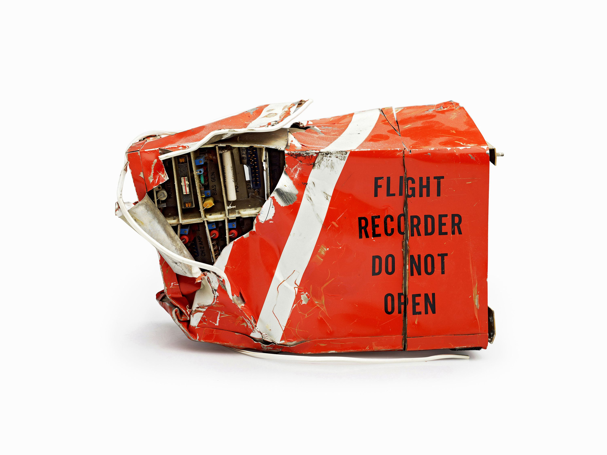

Didactics: Schrodinger's Cat and The Black Box
The proper mathematical definition of the box is a ‘rectangular prism’: a six-faced volume with each face set at 90-degree angles to the adjoining ones. Still, when it is referred to as ‘a box’, an important semantic shift occurs. Where the rectangular prism denotes volume and mass as a single entity, the box separates these. The rectangular prism is a finite entity; the box is by definition incomplete: a container, something empty and in need of filling. The box exists only by virtue of what it contains – in a state of anticipation, waiting for content, whatever that may turn out to be. In architectural terms, the box is not a matter of form following function but of form preceding function – a way to capture the largest possible multiplicity of uses. Block, slab, tower, hall: architecture has multiple names for the box. But since they all describe the same form, their effect on form is limited. No matter what height, length or width it is, a box is still a box. Neither a focus on a proportional system nor an insistence on typological purity fundamentally changes the box. In obeying the laws of both art and science, the box is ultimately neither. The box exists only by virtue of what it contains – in a state of anticipation, waiting for content, whatever that may turn out to be. In architectural terms, the box is not a matter of form following function but of form preceding function – a way to capture the largest possible multiplicity of uses.

Schrödinger's cat is a thought experiment, sometimes described as a paradox, devised by Austrian physicist Erwin Schrödinger in 1935.

A flight recorder is an electronic recording device placed in an aircraft for the purpose of facilitating the investigation of aviation accidents and incidents. Flight recorders are also known by the misnomer black box—they are actually bright orange to aid in their recovery after accidents.